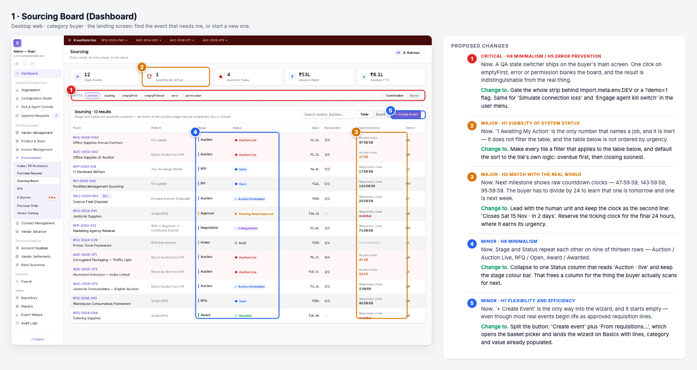

1 · Sourcing Board (Dashboard)
Desktop web · category buyer · the landing screen: find the event that needs me, or start a new one.
1 critical2 major2 minor

- 1
Critical · H8 Minimalism / H5 Error prevention
Now. A QA state switcher ships on the buyer's main screen. One click on emptyFirst, error or permission blanks the board, and the result is indistinguishable from the real thing.
Change to. Gate the whole strip behind import.meta.env.DEV or a ?demo=1 flag. Same for 'Simulate connection loss' and 'Engage agent kill switch' in the user menu.
- 2
Major · H1 Visibility of system status
Now. '1 Awaiting My Action' is the only number that names a job, and it is inert — it does not filter the table, and the table below is not ordered by urgency.
Change to. Make every tile a filter that applies to the table below, and default the sort to the tile's own logic: overdue first, then closing soonest.
- 3
Major · H2 Match with the real world
Now. Next milestone shows raw countdown clocks — 47:59:59, 143:59:59, 95:59:59. The buyer has to divide by 24 to learn that one is tomorrow and one is next week.
Change to. Lead with the human unit and keep the clock as the second line: 'Closes Sat 15 Nov · in 2 days'. Reserve the ticking clock for the final 24 hours, where it earns its urgency.
- 4
Minor · H8 Minimalism
Now. Stage and Status repeat each other on nine of thirteen rows — Auction / Auction Live, RFQ / Open, Award / Awarded.
Change to. Collapse to one Status column that reads 'Auction · live' and keep the stage colour bar. That frees a column for the thing the buyer actually scans for next.
- 5
Minor · H7 Flexibility and efficiency
Now. '+ Create Event' is the only way into the wizard, and it starts empty — even though most real events begin life as approved requisition lines.
Change to. Split the button: 'Create event' plus 'From requisitions…', which opens the basket picker and lands the wizard on Basics with lines, category and value already populated.